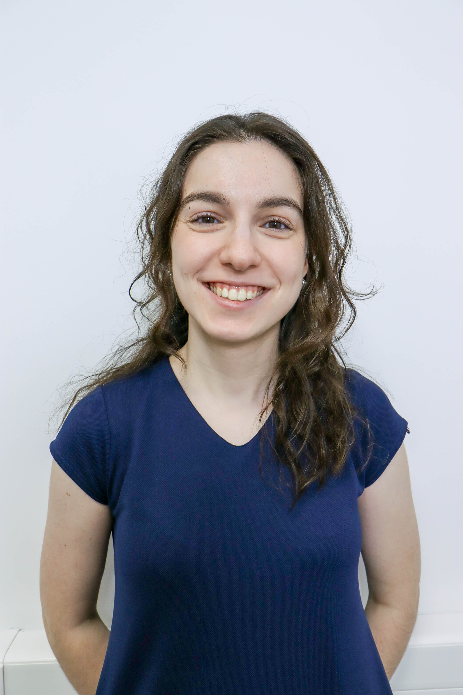

Developer with a masters in Industrial Electronic Enginnering and computers focused in Control, Automation and Robotics. Currently gained an interest in web developing, so I am learning front-end developement.
Contact MeUniversity of Minho
2016-2022
Masters in Control, Automation and Robotics
Follow software processes to achive development goals. Collaboration at development of requirements, design, implementation, integration and testing according to the processes along the V-Model. Documentation of development results.
Recently took on the role of scrum master. Responsible to ensure collaboration between team members, make teamwork and impediments transparent, facilitate continuous improvement of teamwork towards efficiency, and see for the removal of any impediments keeping the team from making progress.